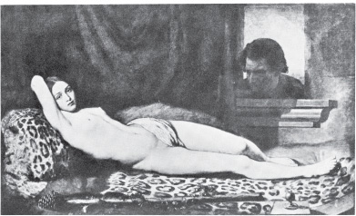
UZANMIŞ BACCHANTE, TRUTAT 1824–1848
Bugün artık irdelenmeye başlayan ama hiçbir çözüme ulaşmamış olan uygulama ve törelere göre kadının toplum içindeki varlığı erkeğinkinden çok başkadır. Erkeğin varlığı kendinde saklı yetkelilik umuduna bağlıdır. Bu, büyük ve inanılır bir umutsa erkeğin varlığı çarpıcı olur. Küçük ve inanılmaz bir umutsa erkeğin varlığı da önemsizleşir. Bu yetkelilik umudu ahlaksal, bedensel, yaradılışa göre değişen, parasal, toplumsal ya da cinsel bir umut olabilir. Neyse ki yetkelilik umudunun yöneldiği nesne her zaman erkeğin dışındadır. Bir erkeğin varlığı o erkeğin yapabileceklerini, sizin için yapabileceklerini gösterir. Üretilebilir bir varlıktır onun varlığı; çünkü erkek gerçekte yapamayacağı şeyleri yapabilecek yetkedeymiş gibi davranır. Bu yalancı davranış her zaman onun başkaları üzerinde etkili olmak için kullandığı bir yetkeye yönelmiştir.
Bunun tersine bir kadının varlığıysa, onun kendine karşı olan tutumunu gösterir; o kadına karşı nelerin yapılıp nelerin yapılamayacağını belirler. Kadının varlığı hareketlerinde, sesinde, fikirlerinde, yüz ifadelerinde, giysilerinde, seçtiği çevrelerde, zevklerinde ortaya çıkar. Gerçekten de kadın kendi varlığına katkıda bulunmayan hiçbir şey yapmaz. Varlığı, kadının kişiliğiyle öylesine içiçedir ki erkekler bunu bedenden çıkan bir tütsü, bir koku, bir sıcaklık olarak algılarlar.
Kadın olarak doğmak, erkeklerin mülkiyetinde olan özel, çevrelenmiş bir yerde doğmak demektir. Kadınların toplumsal kişilikleri, böylesine sınırlı, böylesine koşullandırılmış bir yerde yaşayabilme ustalıklarından dolayı gelişmiştir. Ne var ki bu, kadının öz varlığının ikiye bölünmesi pahasına olmuştur. Kadın hiç durmadan kendisini seyretmek zorundadır. Hemen hemen her zaman kendi imgesiyle birlikte dolaşır. Bir odada yürürken ya da babasının ölüsünün başucunda ağlarken bile ister istemez kendisini yürürken ya da ağlarken görür. Çocukluğunun ilk yıllarından başlayarak hep kendi kendisini gözlemesi, bunun gerekli olduğu öğretilmiştir ona.
Böylece kadın içindeki gözleyen ve gözlenen kişilikleri, kadın olarak onun kimliğini oluşturan ama birbirinden ayrı iki öge olarak görmeğe başlar.
Kadın, olduğu ve yaptığı her şeyi gözlemek zorundadır. Erkeklere nasıl göründüğü, onun yaşamında başarı sayılan şey açısından son derece önemlidir. Kendi varlığını algılayışı, kendisi olarak bir başkası tarafından beğenilme duygusuyla tamamlanır.
Erkekler kadınlara karşı belli bir tutum edinmeden önce onları gözlerler. Bu yüzden bir kadının bir erkeğe görünüşü, kendisine nasıl davranılacağını da belirler. Bu süreci bir ölçüde denetleyebilmek için kadın bunu kabul etmeli ve benimsemelidir. Kadın benliğinin gözleyici yanı, gözlenen yanını öylesine etkiler ki sonunda tüm benliğiyle başkalarından nasıl bir tutum beklediğini gösterir. Böylece kadının, bir eşi daha bulunmayan bu kendi kendini etkileme süreci onun kişiliğini oluşturur. Her kadının varlığı, kendi içinde nelere ‘izin verilip nelere verilemeyeceğini’ düzenler. Eylemlerinin her biri —amacı ya da dürtüsü ne olursa olsun— o kadının kendisine nasıl davranılmasını istediğini gösteren birer simgedir. Bir kadın tutup bardağı yere atarsa bu o kadının kendi kızgınlığını nasıl ele aldığını, bu yüzden başkalarından nasıl bir davranış beklediğini gösterir. Erkek aynı şeyi yaparsa bu, yalnızca onun öfkesini dışa vurmasıdır. Kadın güzel bir fıkra anlatırsa bu, onun kendi içindeki fıkracıya nasıl davrandığını, elbette fıkracı bir kadın olarak başkalarından ne beklediğini gösteren bir örnektir. Fıkra anlatmak için fıkra anlatmak ancak erkeğin yapacağı bir şeydir.
Bunu şöyle yalınlaştırabiliriz: Erkekler davrandıkları gibi, kadınlarsa göründükleri gibidirler. Erkekler kadınları seyrederler. Kadınlarsa seyredilişlerini seyrederler. Bu durum, yalnız erkeklerle kadınlar arasındaki ilişkileri değil, kadınların kendileriyle ilişkilerini de belirler. Kadının içindeki gözlemci erkek, gözlenense kadındır. Böylece kadın kendisini bir nesneye —özellikle görsel bir nesneye— seyirlik bir şeye dönüştürmüş olur.
Avrupa yağlıboya resim geleneğinin bir türünde kadın hiç durmadan yinelenip duran en önemli konudur. Bu tür, çıplak kadın resmidir. Avrupa geleneğindeki çıplak kadın resimlerinde kadınların seyirlik nesneler olarak görülüp değerlendirilmelerinde geçerli olan ölçü ve töreleri bulabiliriz.
Bu gelenekteki ilk çıplaklar Adem’le Havva’dır. Öyküyü Genesis’te (Tekvin’de) anlatıldığı biçimiyle buraya almak yerinde olur:
Ve kadın ağacın meyvelerinin yenmeye değer olduğunu gördü, göze hoş göründüğünü gördü ve bilgilenmek için bu ağacın arzulanması gerektiğini anladı ve meyveyi kopardı ve yedi; kendisiyle birlikte kocasına da verdi ve o da yedi.
İkisinin de gözleri açıldı ve çıplak olduklarını gördüler ve incir yapraklarını birbirine ekleyip önlerine örtü yaptılar... Ve yüce Tanrı erkeği çağırdı ve ona şöyle dedi: “Nerdesin?” Ve erkek de dedi ki “Sesini bahçeden duydum ve korktum; çünkü çıplaktım ve saklandım.”.…
Ve kadına da şöyle dedi Tanrı: “Senin acılarını ve doğurganlığını arttıracağım; çocuklarını acı içinde dünyaya getireceksin, arzuların kocana yönelecek ve seni o yönetecek.”
Bu öyküde çarpıcı olan nedir? Çıplak olduklarını farkettiler, çünkü elmayı yediklerinden birbirlerini değişik görmeğe başladılar. Çıplaklık, bakanın zihninde doğmuş oldu.
Burada ikinci çarpıcı gerçek de kadının suçlanması ve erkeğe boyun eğmekle cezalandırılmasıdır. Kadının karşısında erkek Tanrı’nın temsilcisi olmuştur.
Ortaçağ resim geleneğinde bu öykü resimli roman gibi sahne sahne resme geçirilmiştir.
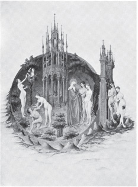
DÜŞÜŞ VE CENNETTEN KOVULMA, POL DE LIMBOURG, 15. YÜZYILIN BAŞI
Yenidendoğuş çağında öyküsel sıralanış ortadan kalkmış, resme geçirilen tek an utanma anı olmuştur. Erkekle kadın incir yapraklarıyla ya da elleriyle bir örtünme hareketi yaparlarken gösterilir. Ama artık birbirlerinden değil, seyirciden utanmaktadırlar.
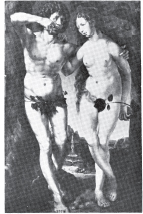
ADEM'LE HAVVA, MABUSE, 16. YÜZYILIN BAŞI
Sonra bu utanma bir tür gösterişe dönüşmüştür.
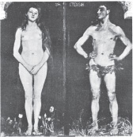
ÇİFT, MAX SLEVOGT 1868–1932
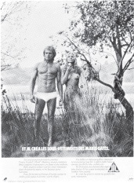
İÇ ÇAMAŞIRI REKLAMI
Resim geleneği dünyasal konulara yönelmeye başlayınca, başka konularda da çıplak kadın yapma olanağı belirdi. Gene de bu resimlerin hepsinde resme konu olan şeyin (kadının) bir seyirci tarafından seyredildiğinin farkında olduğunu gösteren bir şey kaldı.
Kadın kendi başına çıplak değildir.
Seyircinin onu gördüğü biçimde çıplaktır.
Bu, çoğu zaman, —çok beğenilen Susannah ve Kent’in Büyükleri’nde olduğu gibi— resmin asıl konusudur. Susannah’yı yıkanırken gizlice seyretmek için biz de Büyükler’e katılırız. Susannah da kendisini seyreden bizlere bakmaktadır.
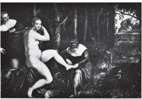
SUSANNAH'YLA KENTİN BÜYÜKLERİ, TINTORETTO
Bu konunun Tintoretto tarafından işlendiği başka bir resimde Susannah, aynada kendisini seyretmektedir. Böylece o da gene kendisini seyreden bizlere katılır.
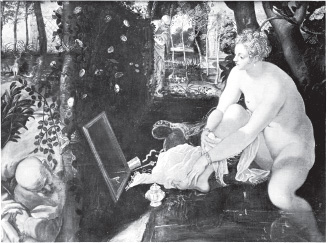
SUSANNAH'YLA KENTİN BÜYÜKLERİ, TINTORETTO 1518–1594
Resimlerde ayna çoğu zaman kadınların kendilerine duydukları hayranlığı anlatan bir simge olarak kullanılmıştır. Ne var ki bu bir yalancılıktır, çünkü burada ortaya koyduğu ahlaksal görüşe çoğu zaman ressamın kendisi katılmamaktadır.
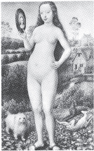
KENDİNE HAYRANLIK, MEMLING 1435–1494
Çıplak kadın resmi yapılıyordu çünkü çıplak kadına bakmaktan zevk duyuluyordu; kadının eline bir ayna veriliyordu ve resme Kendine Hayranlık deniyordu. Böylece çıplaklığı zevk için resme geçirilen kadın ahlak açısından suçlanıyordu.
Oysa aynanın gerçek işlevi çok daha başkaydı. Ayna, kadının kendisini her şeyden önce ve her şeyden çok seyirlik bir şey olarak gördüğünü anlatmak için konuyordu resme.
Paris’in Yargısı çıplak kadına bakan bir ya da birçok erkek fikrini anlatan başka bir konudur.
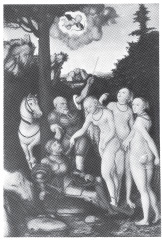
PARİS'İN YARGISI, CRANACH 1472–1553
Ama şimdi resme başka bir öge daha eklenmiştir: yargı öğesi. Paris elmayı en güzel bulduğu kadına sunar. Böylece güzellik, yarışmalı bir şey olur. (Günümüzde Paris’in Yargısı, Güzellik Yarışmalarına dönüşmüştür.) Güzel yargısını alamayanlar güzel sayılmaz. Güzel yargısını alanlaraysa ödül verilir.
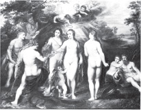
PARİS'İN YARGISI, RUBENS 1577–1640
Ödüllendirilmek bir yargıcın mülkü olmaktır —başka deyişle onun sizden yararlanabilmesi demektir. II. Charles Lely’ye gizli bir resim ısmarlamıştır. Bu resim o geleneğin oldukça tipik bir örneğidir. Resim, Venüs’le Küpid diye de adlandırılabilirdi. Aslındaysa bu Kral'ın metreslerinden birinin, Nell Gwynne’in portresiydi. Resimde, Nell Gwynne uzanmış, kendisini çıplak durumda seyreden seyircisine edilgen bir biçimde öylece bakarken gösterilir.
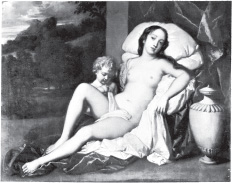
NELL GWYNNE, LELY 1618–1680
Ne var ki burada çıplaklık kadının duygularının bir dışavurumu değildir. Burada çıplaklık, sahibinin (hem resmin, hem de kadının sahibinin) duygularına ya da isteklerine boyun eğme belirtisidir. Kral, başkalarına gösterdiğinde resim kadının kendisine boyun eğişini gösteriyordu; konukları da Kralı kıskanıyorlardı.
Avrupa dışındaki sanat geleneklerinde —Hint, İran, Afrika ve Amerika yerlilerinin sanatında— çıplaklık hiçbir zaman böyle edilgen değildir. Bu geleneklerde, bir yapıtın konusu cinsel çekicilikse, yapıt iki kişi arasındaki etkin cinsel sevişmeyi gösterir. Kadın da erkek gibi etkindir; her ikisi de öbürünü içine alacak biçimde hareket eder.
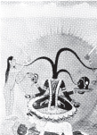
RAJASTHAN 18. YÜZYIL
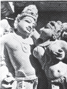
VIŞNU'YLA LAKSHMI 11. YÜZYIL
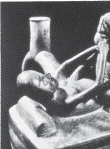
MOCHIA SERAMİĞİ
Şimdi artık Avrupa geleneğinde çıplaklıkla nü’lük arasındaki ayrımı görebiliriz. Nü adlı kitabında Kenneth Clark, çıplak olmak giysisiz olmaktır der; oysa nü bir sanat biçimidir. Ona göre nü, resmin çıkış noktası değil resmin ulaştığı bir görme biçimidir. Bu, bir ölçüde doğrudur —ama bir nü’yü görme biçimi yalnız sanatta olmaz: Nü fotoğraflar, nü pozlar, nü hareketler de vardır. Doğru olan nü’nün her zaman töreleştirildiğidir —bu töreleri koyan da belli bir sanat geleneğidir.
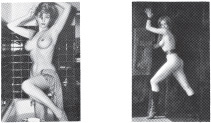
Bu törelerin anlamı nedir? Nü neyi gösterir? Bu soruları yalnızca sanat biçimi açısından yanıtlamak yetmez; çünkü nü’nün yaşanan cinsellikle ilgili olduğu apaçıktır.
Çıplak olmak insanın kendisi olmasıdır.
Nü olmaksa başkalarına çıplak görünmektir; insanın kendisi olarak algılanmamasıdır. Çıplak vücudun nü olabilmesi için bir nesne olarak görülmesi gerekir. (Vücudun nesne olarak görülmesi nesne olarak kullanılmasına yol açar.) Çıplaklık kendisini olduğu gibi ortaya koyar. Nü’lükse seyredilmek üzere ortaya konuştur.
Çıplak olmak açık olmaktır.
Seyredilmek üzere ortaya çıkmak insanın derisinin, vücudundaki kılların, bu durumda hiç bir zaman çıkarılıp atılamayacak bir çeşit örtüye dönüşmesi demektir. Nü hiç bir zaman çıplak olamayacaktır. Nü’lük bir çeşit giyinikliktir.
Sıradan Avrupa nü resimlerinde asıl kahraman hiçbir zaman resimde görünmez. O, resmin önündeki seyircidir ve erkek olarak kabul edilir. Her şey ona göre yapılmıştır. Her şey onun orada bulunmasından dolayı olmuş gibi görünmelidir. Resimdeki vücutların nüleşmesi onun içindir. Ama o, tanımı gereği bir yabancıdır —giysileri üstünde olan birisidir.
Bronzino’nun Zaman ve Sevgi Orunlaması’nı düşünün.
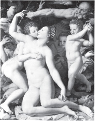
VENUS, KÜPİD, ZAMAN VE SEVGİ, BRONZINO 1503–1572
Resmin ardındaki gizli karmaşık simgeler bizi şimdilik ilgilendirmez, çünkü bu simgeler cinsel çekimi —birinci derecede— etkilemez. Bu herşeyden önce cinsel kışkırtma amacıyla yapılmış bir resimdir.
Resim, Fransa Kralı’na Floransa Dükü tarafından armağan olarak gönderilmiştir. Mindere diz çökerek kadını öpen çocuk Küpit’tir. Kadın da Venüs’tür. Oysa kadının duruşunun öpüşme hareketiyle hiç ilgisi yoktur. Vücudunun böyle resmedilişi kadını resme bakan erkeğe sergilemek içindir. Resim, o erkeğin cinselliğini uyandırmak için yapılmıştır. Kadının cinselliğiyle hiçbir ilgisi yoktur. (Bu resimde görüldüğü gibi Avrupa geleneğinde de kadın vücudundaki kılları genellikle resme geçirmeme alışkanlığı aynı amaca hizmet eder. Kıl, cinsel güç ve tutkuyla ilgili görülmüştür. Kadının cinsel tutkusunun az gösterilmesi gerekir ki seyirci kendisini bu tutkunun tekelcisi hissedebilsin.) Kadınlar orada bir açlığı gidermek için bulunurlar; kendi açlıklarını doyurmak için değil.
Şu iki kadının yüzlerindeki ifadeyi karşılaştırın:
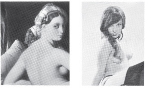
BÜYÜK ODALIK, INGRES 1780–1867
Bunlardan biri Ingres’in ünlü resmindeki modeli, öbürü de açık saçık dergilerden alınmış bir fotoğraf modelini gösteriyor.
İkisinde de yüz ifadeleri şaşırtıcı bir benzerlik göstermiyor mu? Kendisine baktığını sandığı erkeğe —onu hiç tanımamasına karşın— nazla bakan bir kadının yüz ifadesidir bu. Burada kadın seyredilen birisi olarak dişiliğini sunmaktadır.
Resimlerde bazan kadının erkek sevgilisinin sergilendiği de doğrudur.
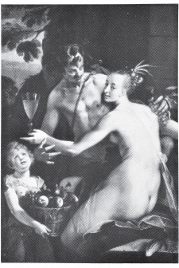
BAKÜS, CERES VE KÜPİT, VON AACHEN 1552–1615
Ne var ki resimdeki kadının ilgisi hemen hemen hiç bir zaman ona yönelmez. Çoğu zaman kadın ona bakmaz bile; resmin dışına, kendisini kadının gerçek âşığı sanan kişiye —seyirci sahibine— bakar.
Sevişen bir çifti gösteren özel bir açık saçık resim türü daha vardı (özellikle on sekizinci yüzyılda). Bu resimlerin karşısında bile seyirci sahip resimlerdeki adamı ya yok sayıyor ya da kendini onun yerinde düşlüyordu. Avrupa dışı resim geleneklerindeki çiftlerin imgeleriyse, bunun tersine, bir çok çiftin aynı anda seviştiği düşüncesini uyandırır. ‘Hepimizin binlerce eli, binlerce ayağı var; hiç yalnız kalmayacağız.’
Yenidendoğuş sonrası Avrupasında cinsel imgelerin hemen hepsi önden gösterilmiştir —ya gerçekten önden verilmiştir ya da öne yansıtılmıştır— çünkü asıl cinsel kahraman resme bakan seyirci sahiptir.
Erkekliğin böylesine şişirilmesinden doğan gariplik, on dokuzuncu yüzyılın akademik sanatında doruğuna ulaştı.
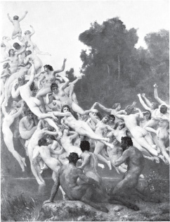
OREADLAR, BOUGUEREAU 1825–1905
Devlet adamları, işadamları böyle resimlerin altında yapıyorlardı iş tartışmalarını. İçlerinden birisi yenik düştüğünü hissettiği zaman avunmak için başını kaldırıp resimlere bakıyordu. Resimde gördükleri ona erkek olduğunu bir kez daha anımsatıyordu.
Avrupa yağlıboya resim geleneğinde bütün bunların dışında kalan başka nüler de vardır. Gerçekten de bunlara nü bile denemez artık —çünkü o sanat biçiminin kurallarını bütünüyle yıkmışlardır. Bunlar gerçekten sevilen kadınların az ya da çok çıplak resimleridir. Geleneği oluşturan yüzbinlerce nünün arasında belki yüz kadar tutar bu değişik nüler. Bunların her birinde ressamın o kadını kişisel olarak görüşü öylesine güçlüdür ki seyirciye yer kalmaz. Ressam, görüşüyle kadını kendisine sımsıkı bağlamıştır; artık ikisi taşa yontulmuş bir çift gibi içiçedirler. Seyirci olsa olsa yalnızca onların ilişkisine tanık olabilir; bundan öte birşey yapamaz. Dışlanan birisi olduğunu kabul etmek zorunda kalır. Resimdeki kadının salt o seyretsin diye soyunmuş olduğuna inandıramaz kendini. Kadını nüleştiremez. Ressam kadını resme geçirirken onun istemiyle eğilimlerini hem imgenin yapısına hem de vücudunun ve yüzünün ifadesine sindirmiştir.
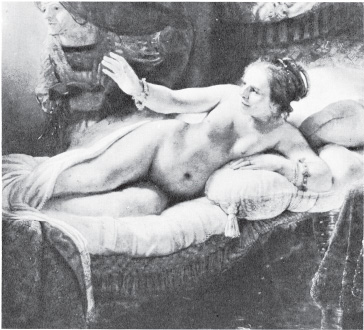
DANÄE, REMBRANDT 1606–1669
Geleneğin içinde ve dışında kalan resimler ancak bu çıplak/nü ayrımı yoluyla tanınabilir; gene de çıplaklığı resme geçirme sorunu ilk bakışta göründüğü ölçüde kolay değildir.
Gerçekte çıplaklığın cinsel işlevi nedir? Giysiler dokunmayı ve hareketi güçleştirir. Ne var ki çıplaklığın kendi başına olumlu bir görsel değeri var gibi geliyor insana: Karşımızdakini çıplak görmek istiyoruz. Karşımızdakiler bize görünüşlerini sunuyorlar; biz de —bazan ilk ya da yüzüncü kez yapıldığını düşünmeden— alıyoruz bunu. Karşımızdakini böyle görüşümüz ne anlama geliyor bizim için; bu tüm açılma anında arzumuzu nasıl etkiliyor?
Karşımızdakinin çıplaklığı bir doğrulanma oluyor; bizde çok güçlü bir rahatlama duygusu uyandırıyor. O da ötekiler gibi bir kadın; o da ötekiler gibi bir erkek: Bilinen o cinsel sürecin akıllara durgunluk veren yalınlığına kaptırıyoruz kendimizi.
Elbette bunun tersini bilinçli olarak bekleyemeyiz: ‘Bilinçaltı’ eşcinsel arzular (ya da çift eşcinselse bilinçaltı karşı cinsel duygular) ikisini de değişik bir şeyler beklemeye itebilir yarı yarıya. Ama bu ‘rahatlama’ duygusunu bilinçaltına başvurmadan da anlayabiliriz.
Karşımızdakinin başka türlü olmasını beklememişizdir; ne var ki duygularımızın yoğunluğu, karmaşıklığı bunun biricik bir yaşantı olduğu duygusunu uyandırır bizde. Kadın ya da erkek, karşımızdakinin, olduğu gibi görünmesi bu biriciklik duygusunu ortadan kaldırır. Karşımızdaki kadın ya da erkek, kendi cinsinden değişik birisi olmaktan çok onların bir benzeridir. Çıplaklığın herkesçe —soğuk ve kişisel değil de— sıcak ve dostça bir şey olarak algılanması bunun farkında olmaktan gelir.
Aynı şey başka biçimde de anlatılabilir: İlk kez görüldüğü anda çıplaklığa bir sıradanlık öğesi girebilir; bu öğenin işe karışması bizim duyduğumuz bir gereksinmeden ötürüdür..
O ana dek karşımızdaki az çok gizemli birisidir. Utanmanın kuralları yalnızca din yasaklarından doğmuş ya da duygusal şeyler değildir: Burada gizemliliğin ortadan kalkışını da hesaba katmak gerekir. Gizemliliğin böyle ortadan kalkması belki de büyük ölçüde görseldir. Algılama noktası gözler, dudaklar ve omuzlardan ellere kayar —bütün bunlar aslında öylesine güçlü anlatım araçlarıdır ki bunlarla ortaya çıkan kişilik binbir katlıdır —algılamanın odak noktası buradan cinsel organlara doğru kayar. Bu organların biçimlenişi de insanı bir yandan bütünüyle kendine çekerken öte yandan o tek eyleme çağırır. Karşımızdaki erkek ya da kadın, —sizin isteğinize göre— kendi cinsel türünün düzeyine dek yüceltilir ya da indirgenir. Rahatlamamız, tartışma götürmez bir gerçekliği bulmamızdandır. Önceki karmaşık duygularımız, bu gerçekliğin bizden o anda beklediklerine boyun eğer.
İlk soyunma anındaki sıradanlığa gereksinme duyarız çünkü bu sıradanlık bizi gerçeğe indirger. Aslında bundan da öte birşey yapar. Cinselliğin tartışılmaz, atalardan gelme mekanizmasını taşıyan bu gerçeklik cinselliğin herkesçe paylaşılma özelliğini de birlikte getirir
Gizemliliğin kayboluşu, ortaklaşa gizem yaratma yolunun ele geçirilmesiyle aynı anda olur. Süreç şudur: Öznel⇒ nesnel⇒ öznel —bu sürecin karesi alınır.
Durağan bir cinsel çıplaklık imgesi yaratmanın ne denli güç olduğunu şimdi anlayabiliriz. Yaşanırken çıplaklığın algılanması bir durum değil, bir süreçtir. Bu sürecin içinden bir an kesilip ayrılırsa bu anın imgesi sıradan olacaktır. İmgenin sıradanlığı, imgelemce yoğun iki durum arasındaki akışı vermek yerine, bir anı dondurmasındandır. Güzel çıplak insan fotoğraflarının güzel çıplak insan resimlerinden daha az olması bundandır. Fotoğrafçıların başvurduğu kolay çözüm yolu vücudu nü olarak vermektir; böylelikle hem seyreden, hem de seyredilen genelleştirilerek cinsellik öznel olmaktan çıkarılır, arzular düşe dönüştürülür.
Şimdi de çıplaklığın resme geçirilişini gösteren değişik bir imgeyi inceleyelim. Bufiubens'in oldukça yaşlıyken evlendiği kendinden genç, ikinci karısının resmidir.
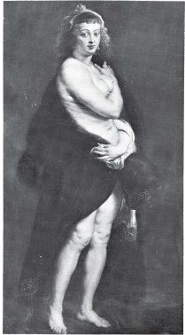
KÜRK MANTOLU HELENE FOURMENT, RUBENS 1577–1640
Kadını burada yana dönüş hareketi içinde görürüz; kürkü omuzlarından düşmek üzeredir. Bu durumda bir saniyeden fazla kalmayacağı bellidir. Yüzeysel olarak bakarsak kadının imgesi bir fotoğraf İmgesi gibi verilmiştir. Ama daha derin anlamda bu resim zamanı ve zamanın yaşanışını ‘içerir’. Kürkü omuzlarına alışından bir dakika önce kadının bütünüyle çıplak olduğunu düşünmek kolaydır. Tüm çıplaklık anından önceki ve sonraki evrelerin hepsi aşılmıştır burada. Kadın aynı anda bunlardan herhangi birinde ya da hepsinde birden bulunabilir.
Kadının vücudu karşımızda seyirlik bir şey olarak değil, bir yaşantı —ressamın yaşantısı— olarak vardır. Neden? Bunun görünüşte önemsiz olan bir takım belirtileri vardır: dağınık saçlar; ressama bakan gözlerdeki ifade; ince, aşırı duyarlı teninin resme geçirilişindeki yumuşaklık. Oysa derinde yatan neden biçimseldir. Kadının görünüşü, gerçekte ressamın öznelliğinden geçirilerek yontu biçiminde yeniden dökülmüş gibidir. Vücuduna sardığı kürkün altında kadının üst yanıyla bacakları hiçbir zaman biraraya getirilemez. Yana doğru neredeyse yirmi santimlik bir kayma vardır; baldırlarının kalçasıyla birleştirilebilmesi için yirmi santim yana kaydırılması gerekir.
Rubens bunu düşünerek yapmamıştır sanırız. Seyirci de bunu bilinçli olarak görmeyebilir. Kendi içinde önemsiz birşeydir çünkü bu. Önemli olan bu kaymanın neye yol açtığıdır. Kayma, vücuda olmayacak bir canlılık kazandırmıştır. Resmin iç tutarlılığı kendinden değil, ressamın yaşantısından gelir. Daha açık söylersek resim, vücudun alt ve üst kesimlerinin, örtü altında kalan cinsel merkez çevresinde ayrı ayrı ve ters yönde dönmesine olanak sağlar. Ayrıca örtü altında kalan bu cinsel merkez, koyu kürk manto yoluyla, kadını çevreleyen koyuluğa katılmıştır. Böylece kadın, cinselliğini gösteren bir eğretileme olarak kullanılan karanlığın hem çevresinde hem de içinde dönmektedir.
Tek bir anı aşma, öznelliği kabul etme zorunluluğundan başka yukarıda değindiğimiz bir öge daha vardır burada: Bu öge, çıplak cinsel imgenin özel olması açısından çok önemlidir. Ortaya çıkarılması gereken ama dondurucu olmayan sıradanlık ilkesidir bu. Kadını zevk için gizlice seyreden kişiyle gerçek sevgili arasındaki ayrım budur işte: Rubens’in Hélène Fourment’in vücudundaki şişman yumuşaklığı resme geçirmek istemesinde böyle bir sıradanlık vardır: Bu vücudun resme geçirilişi her türlü biçim ülküsünü sürekli olarak yıkarak (Rubens’e) karısının taşıdığı o olağanüstü kendine özgülüğün umudunu tattırır.
Avrupa yağlıboya resmindeki nüler çoğu zaman Avrupa’daki insancıl ruhun beğenilesi birer örneği olarak sunulmuştur. Bu ruh bireycilikten ayrılamaz durumdaydı. Bireycilik çok bilinçli bir biçimde gelişmeseydi, bu geleneğin dışına çıkan (son derece kişisel) çıplaklık imgeleri de hiçbir zaman resme geçirilemezdi. Gene de bu geleneğin içinde, kendisinin çözemeyeceği bir çelişki yatıyordu. Birkaç sanatçı bunu sezgileriyle anlayıp çelişkiyi kendi dilleriyle çözdüler. Ne var ki bu çözümler geleneğin ekinsel diline hiçbir zaman tam olarak giremedi.
Bu çelişki şöyle de anlatılabilir: Bir yanda ressamın, düşünürün, efendinin, sahibinin bireyciliği öte yanda bu insanların eylemlerinin nesnesi olan ya da bir soyutlama gibi görülen kişi— başka deyişle kadın.
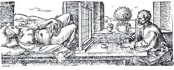
Dürer kusursuz nü’nün, yüzün bir kadından, göğüslerin bir başkasından, bacakların üçüncü bir kişiden, omuzların dördüncü bir vücuttan, ellerin beşinciden vb. alınarak yapılabileceğine inanıyordu.
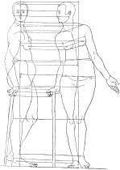
TAHTAOYMA, DÜRER 1471–1528
Elde edilen sonuç İnsan’ı görkemli kılacaktı. Oysa böyle birşeye girişmek, bir insanın kim olduğunu hiç dikkate almamak demekti.
Avrupa nü sanatında ressamlar ve seyirci-sahipler erkekti, nesne olarak işlenen kişilerse çoğunlukla kadın. Bu ters ilişki ekinimize öylesine sinmiştir ki bugün bile sayısız kadının bilincine biçim vermektedir. Kadınlar kendilerine karşı, erkeklerin onlara karşı davrandığı biçimde davranmaktadırlar. Kadınlar da, erkeklerin onların karşılarında yaptıklarını yapıp kendi dişiliklerini seyretmektedirler.
Modern sanatta nü türü önemini bir ölçüde yitirmiştir. Sanatçıların kendileri de bu önemden kuşkulanmaya başlamışlardır artık. Birçok bakımdan olduğu gibi Manet bu bakımdan da bir dönüm noktası sayılır. Manet’nin Olympia’sını Titian’ınkiyle karşılaştırırsak Manet’nin geleneksel yerine oturtulmuş olan kadının resminde bu yere belli bir başkaldırmayla karşı çıkmakta olduğunu görürüz.
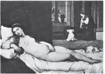
URBINO'NUN VENÜS'Ü, TITIAN YAKLAŞIK 1487–1576
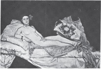
OLMPIA, MANET 1832–1883
İdeal kadın imgesi bozulmuştur. Ne var ki onun yerine konan şey —yirminci yüzyılın başındaki öncü resmin değişmez kadını olan— yosmanın ‘gerçekliği’nden öte birşey değildir. (Toulouse-Lautrec, Picasso, Rouault, Alman Dışavurumculuğu vb.) Gelenek, akademik resimde de sürdürülmüştür.
Bu geleneği besleyen tutucu değerler günümüzde daha geniş alanlara ulaşabilen yollarla —reklâmlar, gazeteler ve televizyonla— yaygınlaştırılmaktadır.
Gene de kadınları görme biçimi, imgelerin kullanılışı temelde değişmemiştir. Kadınlar erkeklerden çok değişik bir biçimde gösterilir —dişinin erkekten başka olmasından gelen bir şey değildir bu— ideal’ seyircinin her zaman erkek olarak kabul edilmesinden, kadın imgesinin onun gururunu okşamak amacıyla düzenlenmesindendir. Bunun böyle olduğundan kuşkunuz varsa şu deneyi yapın: Bu kitaptan geleneksel bir nü imgesi seçin. Kadını erkeğe dönüştürün. Kafanızda ya da resmin üstünde oynayarak yapabilirsiniz bunu. Sonra da bu değişikliğin yarattığı sarsıntıya bir bakın. İmgede değil, kafanızda tasarladığınız seyircinin içinde yaratacağı sarsıntıya!